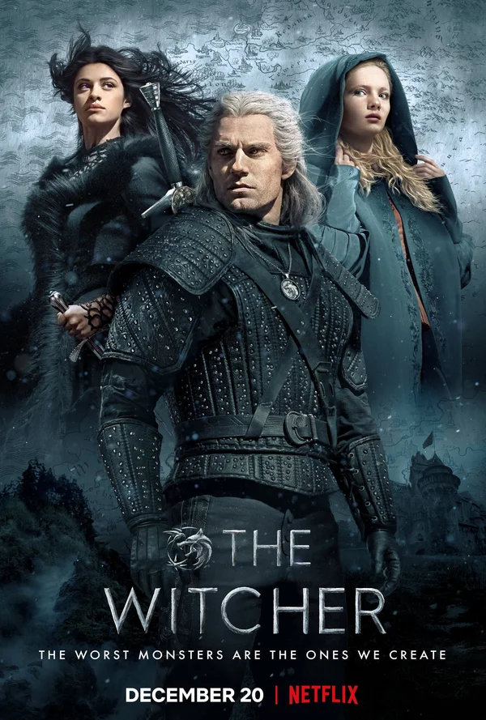
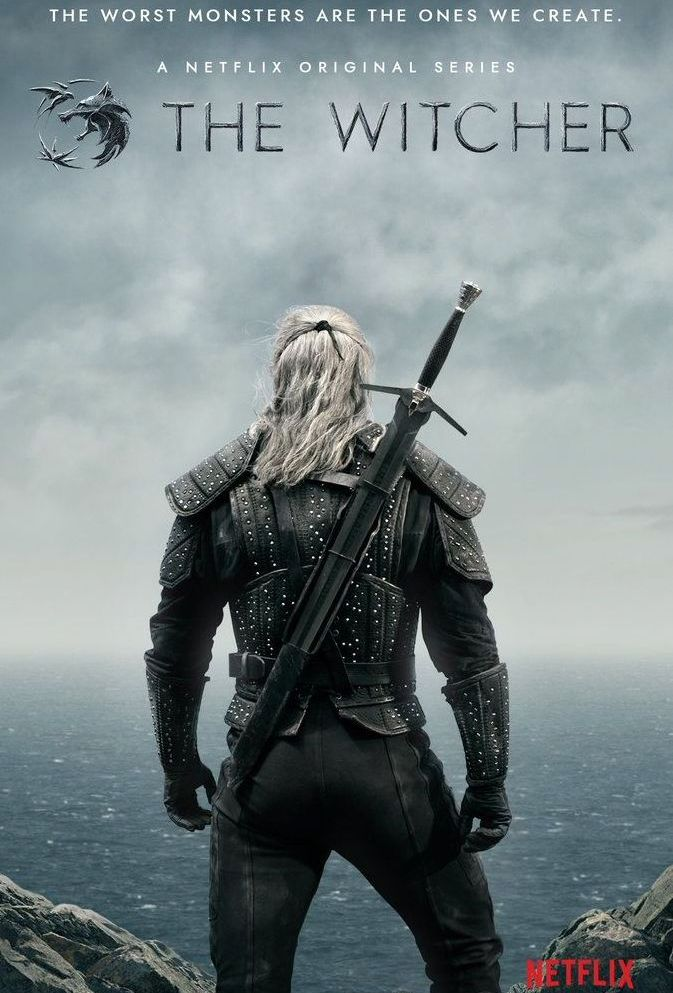

Ведьмак (сериал 2019 – ...)
Ведьмак Геральт из Ривии старается найти своё место в мире, где люди часто оказываются намного хуже монстров. Сюжет первого сезона большей частью представляет собой вольную интерпретацию некоторых рассказов первых двух книг саги о Ведьмаке — «Последнее желание» и «Меч Предназначения». Сюжет второго сезона обещает стать адаптацией книги «Кровь эльфов», попутно экранизировавшей ранее пропущенные истории из вышеназванных сборников.
| № | Название | Режиссёр | Автор сценария | Дата премьеры |
|---|---|---|---|---|
| 1 | «Начало конца» «The End's Beginning» |
Алик Сахаров | Лорен Шмидт Хиссрих | 20 декабря 2019 |
| Основано на рассказе «Меньшее зло» из сборника «Последнее желание». | ||||
| 2 | «Четыре марки» «Four Marks» |
Алик Сахаров | Дженни Клейн | 20 декабря 2019 |
| Основано на рассказе «Край света» из сборника «Последнее желание». | ||||
| 3 | «Предательская луна» «Betrayer Moon» |
Алекс Гарсия Лопес | Бо ДеМайо | 20 декабря 2019 |
| Основано на рассказе «Ведьмак» из сборника «Последнее желание». | ||||
| 4 | «Банкеты, ублюдки и похороны» «Of Banquets, Bastards and Burials» |
Алекс Гарсия Лопес | Деклан де Барра | 20 декабря 2019 |
| Основано на рассказе «Вопрос цены» из сборника «Последнее желание» и рассказе «Меч Предназначения» из сборника «Меч Предназначения». | ||||
| 5 | «Желания из бутылки» «Bottled Appetites» |
Шарлотта Брэндстрём | Снеха Курс | 20 декабря 2019 |
| Основано на рассказе «Последнее желание» из сборника «Последнее желание». | ||||
| 6 | «Редкие виды» «Rare Species» |
Шарлотта Брэндстрём | Хэйли Холл | 20 декабря 2019 |
| Основано на рассказе «Предел возможного» из сборника «Меч Предназначения». | ||||
| 7 | «Перед падением» «Before A Fall» |
Алик Сахаров и Марк Джобст | Михаэль Островский | 20 декабря 2019 |
| Основано на рассказе «Нечто большее» из сборника «Меч Предназначения». | ||||
| 8 | «Нечто большее» «Much More» |
Марк Джобст | Лорен Шмидт Хиссрих | 20 декабря 2019 |
| Основано на рассказе «Нечто большее» из сборника «Меч Предназначения». | ||||